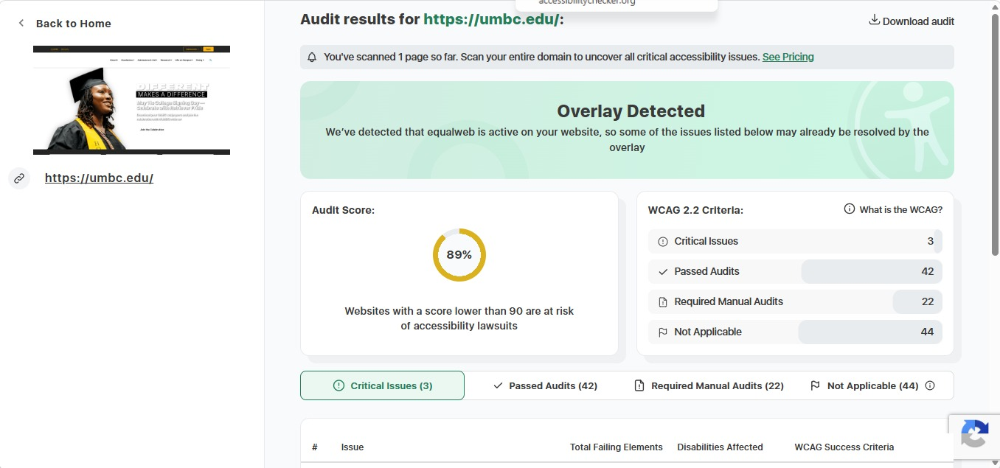
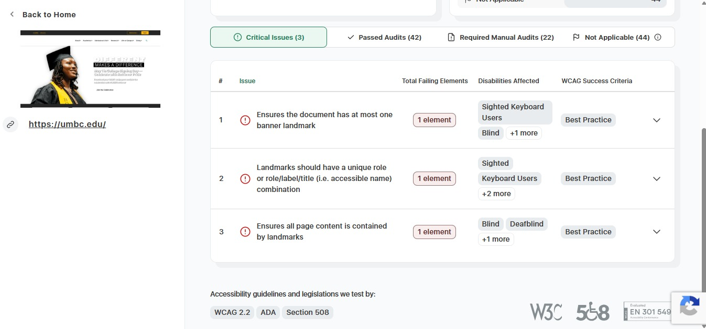

- What is the URL of the website?
- The URL of the website is: UMBC
- What is the name of the website?
- The name of the website is: UMBC
- Who is the site's target audience?
- The sites target audience are the university's students or any student seeking to attend along with their parents or staff members.
- How is the site organized?
- The site is organized in a hierarchical way.
- What is the Audit Score according to the Accessibility Checker
- The audit score of the website is 89%.
- What is the site's effectiveness? Does it support users in completing actions accurately?
- The site is pretty effective in my opinion. It does help users complete actions accurately.
- How is the engagement? Is it pleasant to use and appropriate for its industry/topic?
- The website is pretty easy to use it works well for a college site because it focuses on clear information and organization.
- Make at least one recommendation to improve this website based on what you learned in this module.
- After visiting the website and running it through the accessibility checker I think the website should put in prompts to include the problem with eyesight trouble especially the blind. Every issue I saw was related to not making it easy for them to use. It should maybe have a voice over option. When you first get into the website it should maybe ask you with a voice if you need that kind of accessibility and ask you to press the space key to continue with the option or something.

